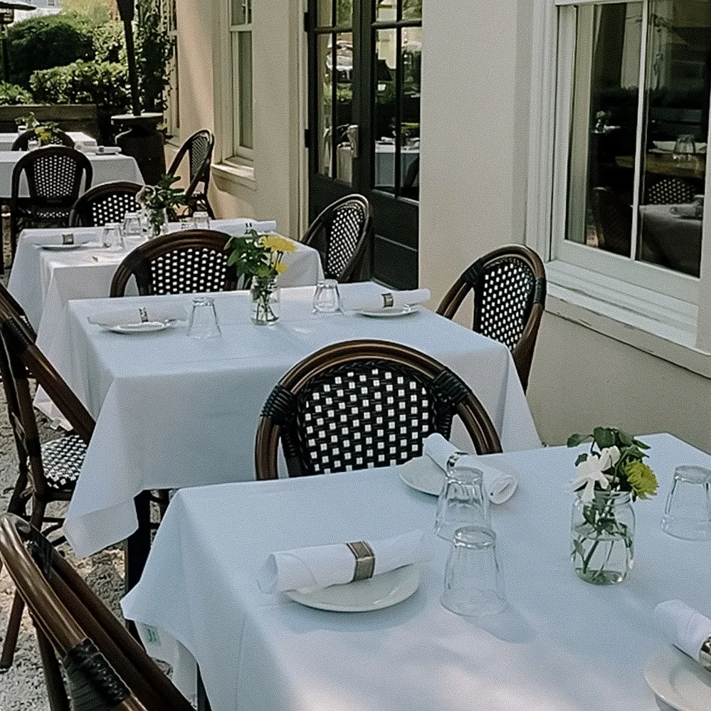
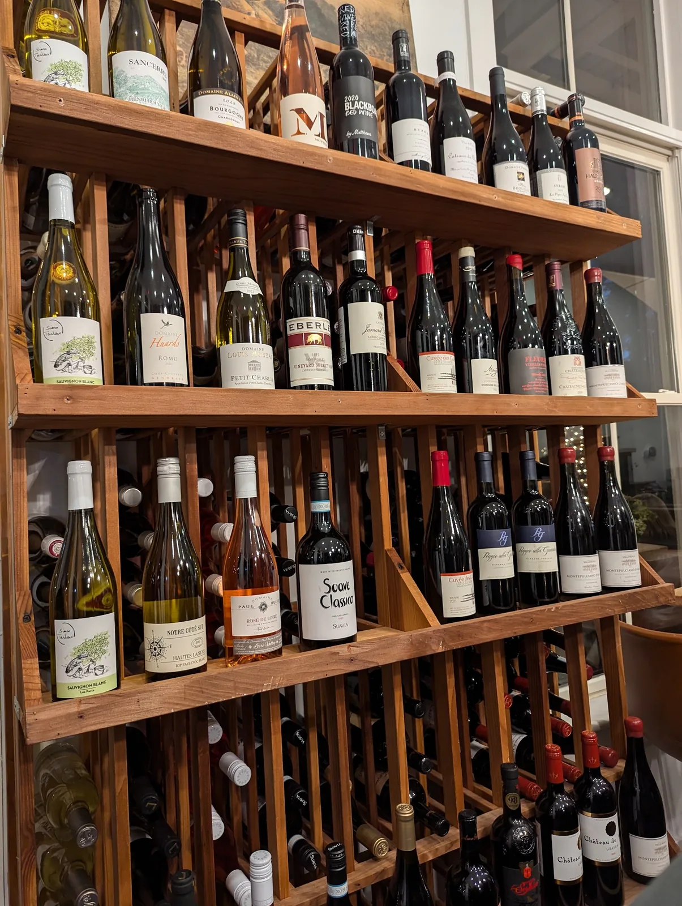

Menu
What’s on today
What’s on today
came off the beds
this morning.
A short card, printed fresh. It changes with the garden and the season — which is exactly the point.
The dinner card is reprinted as the garden and the season change. Call us for tonight’s.

Wine
From the vineyards of France to the slopes of California.
At Bistro Ten, the joy of a fine wine sip isn’t just understood, it’s celebrated.
Whether you crave the sparkle of a Prosecco or the depth of a classic Rouge, our list is curated for connoisseurs and casual enthusiasts alike. Ask about the Wine Club — members gather through the year to taste what has just landed.
★★★★★
“An excellent dining experience. Our appetiser was a Truffle Pate and it was delicious. Entrees were a lemon chicken and a seared salmon. Perfect portion sizes and very well prepared. For dessert we shared a creme brulee.”Davis Bacher
★★★★★
“Terrific woman-owned restaurant that presents intriguing menus that change with both seasons and ‘whims’ but never disappoint! Ambiance, service and attitude are exceptional.”Mark Masterson
★★★★★
“We had the club sandwich, whipped ricotta, mushroom soup of the day, and the shrimp salad. Wouldn’t change a thing.”Rita Masini